Capturas
Todas son pantallazos reales de máquinas virtuales del proyecto (VirtualBox, 1280×800, 4 GB de RAM), no montajes. Cada pie dice de qué edición y de qué ensayo vienen, porque en este proyecto la fecha del quemado cambia lo que se ve en la pantalla.
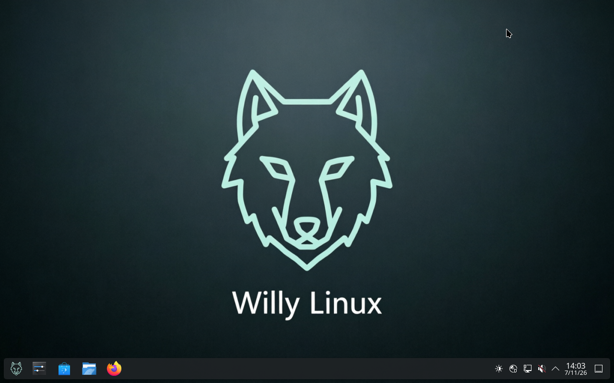
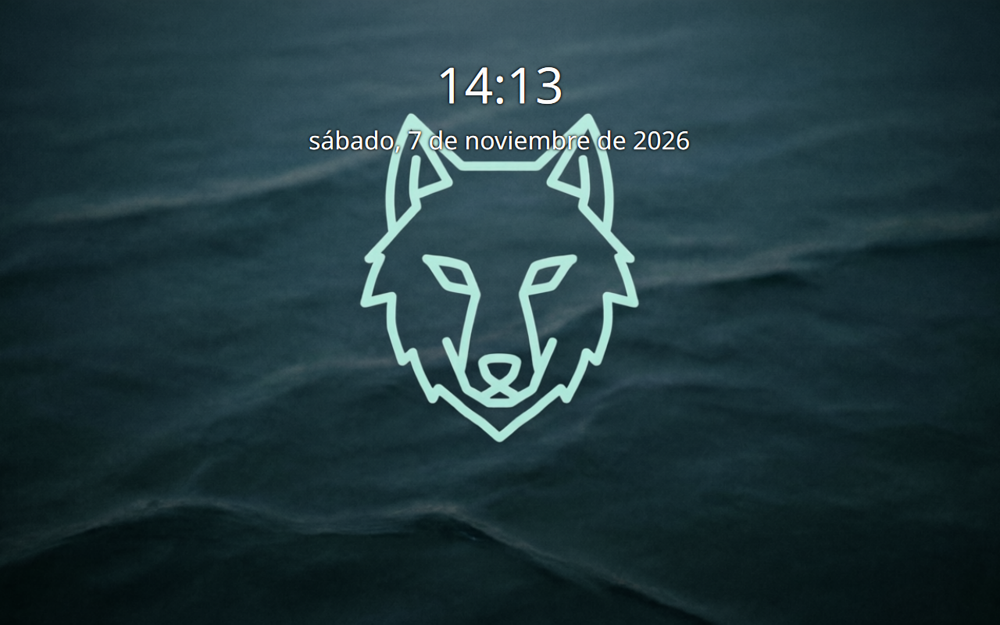
willy-lock y volvió a entrar con la contraseña
willy. En la ISO del 2026-10-20 no abría ni willy ni
live: la cuenta live no tenía hash en /etc/shadow. Este es el defecto
más serio que salió del ensayo, y aquí es donde se ve arreglado.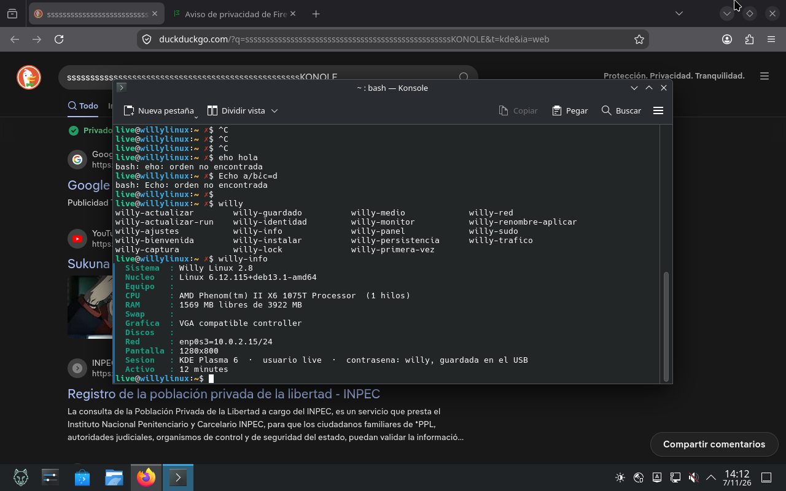
willy-info en la live. Sistema Willy Linux 2.8,
kernel 6.12.115+deb13.1-amd64, sesión KDE Plasma 6 con usuario live y
contraseña willy. La lista de comandos willy-* que aparece arriba es
real: 19 herramientas propias en /usr/local/bin.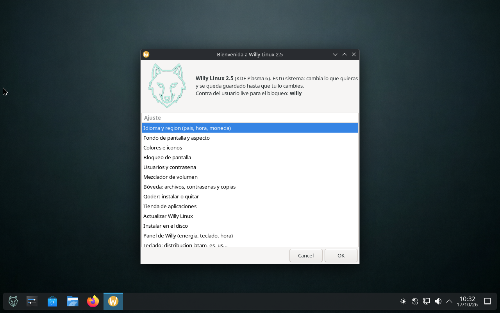
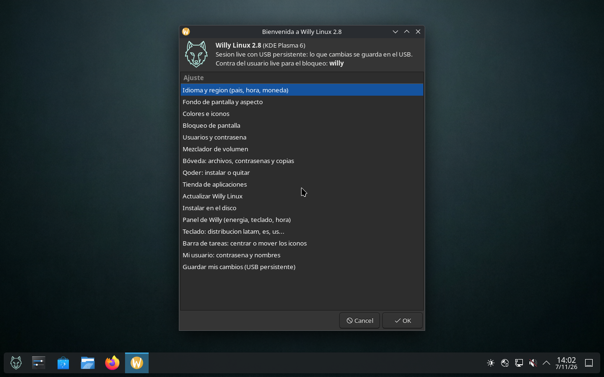
willy» — abreviatura del guion, no errata
de la captura. Es la contraseña que willy-primera-vez escribe en la imagen y la que
abre el bloqueo de la captura anterior.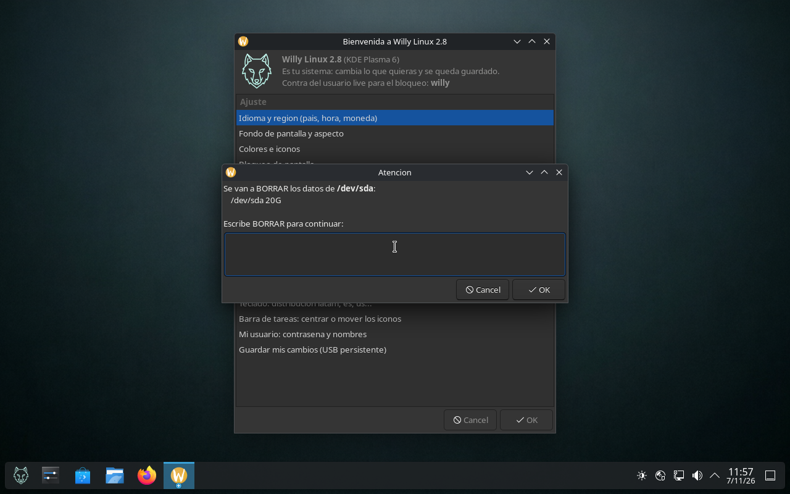
BORRAR y muestra el disco exacto (/dev/sda 20G). Sin esas seis letras
no continúa. Captura del ensayo UEFI del 2026-11-07 con la 2.8; en la lista ya no aparece el
disco entero ni zram0, que eran los dos defectos de la 2.5.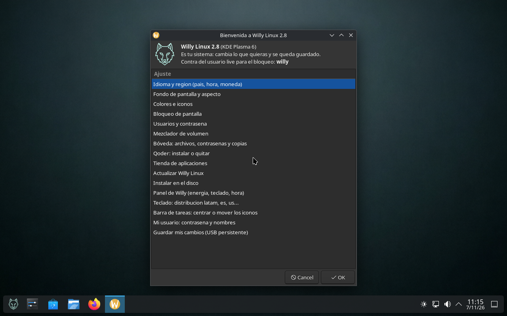
msdos, que es la rama donde parted rechazaba los nombres de
partición en la 2.5.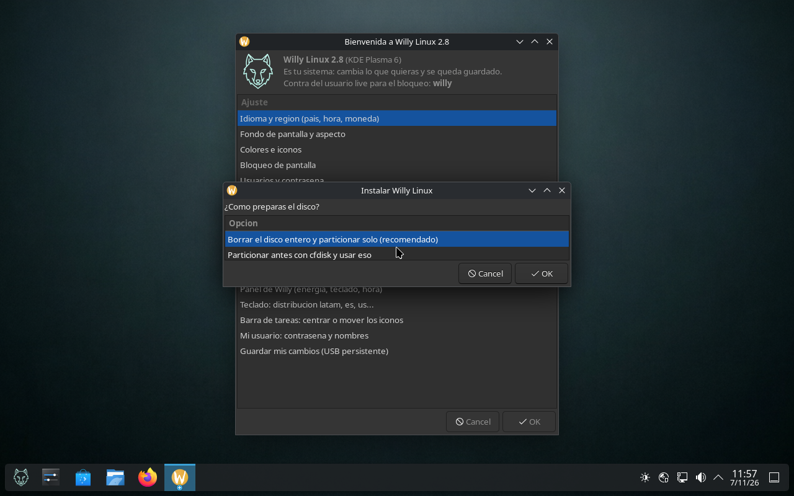
1000.01. Los menús de KDE vienen del paquete de
idioma plasma-l10n declarado en la lista de escritorio.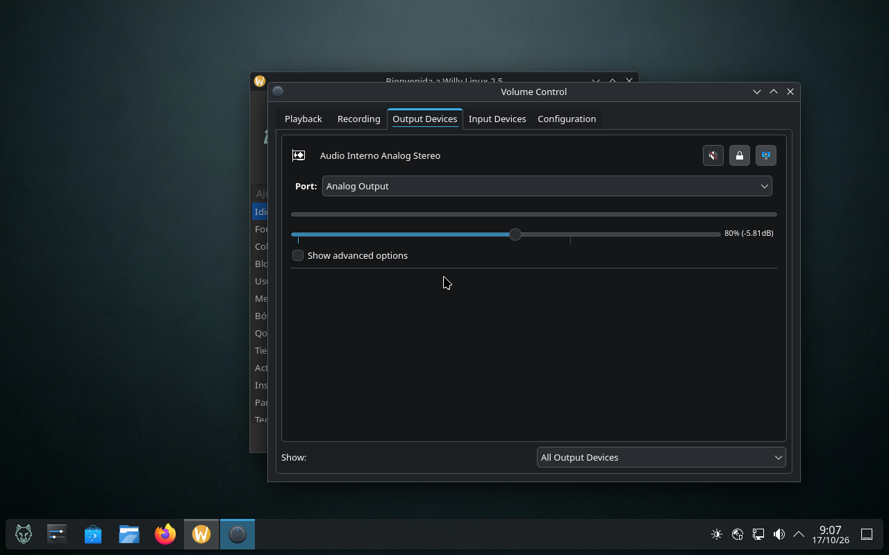
alsa-ucm-conf y alsa-topology-conf, que es lo que hace que la barra
mande algo en portátiles Realtek e Intel.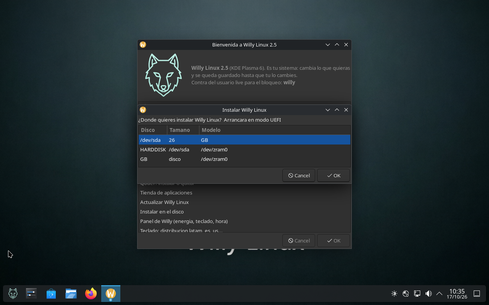
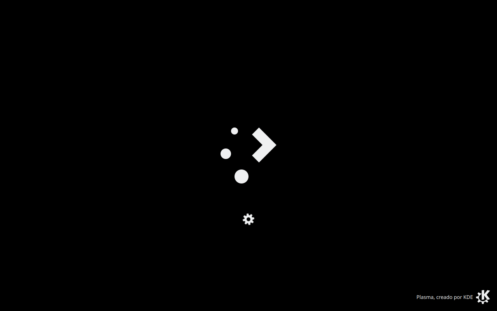
modo seguro y «Comprobar la integridad del USB». Los textos los reescribe un
hook de fase binary, sobre la ISO ya generada.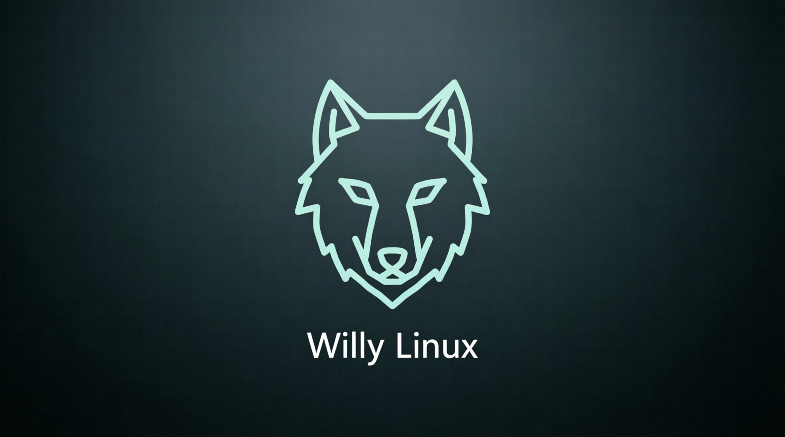
/usr/share/backgrounds/willylinux/); el asistente los cambia con una opción.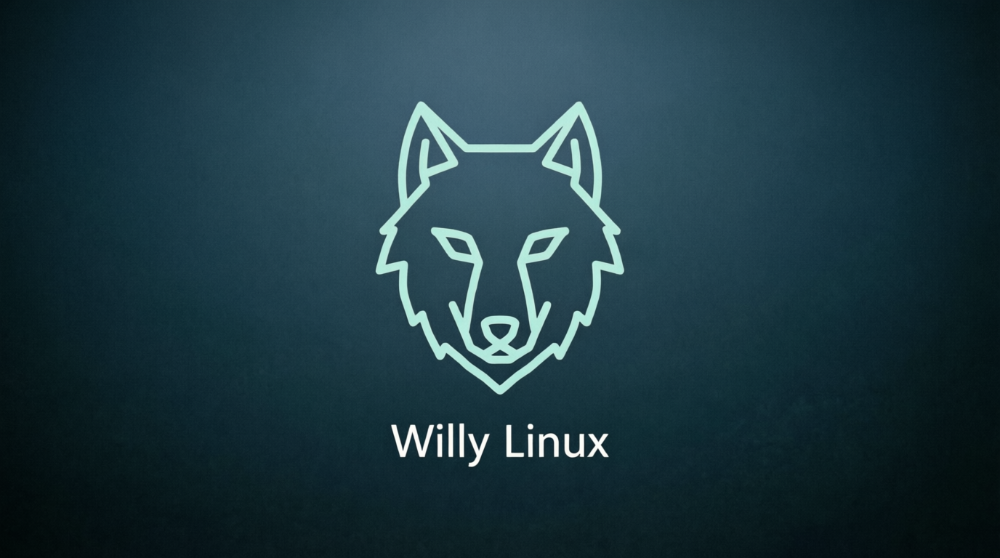
Qué se probó en máquina el 2026-11-07 y qué no
Este proyecto prefiere escribir qué no está probado a publicar una galería que mienta. La ISO quemada en GitHub Actions el 2026-11-07 se arrancó en VirtualBox (BIOS, 4 GB de RAM, 2 CPU) y esto es lo que dio:
| Comprobado en la live | Resultado | Cómo se sabe |
|---|---|---|
| Arranque hasta el escritorio | sí, pintado a los 80 s | secuencia de capturas cada 20 s |
| Identidad y kernel | sí — Willy Linux 2.8, 6.12.115+deb13.1-amd64 | willy-info en pantalla |
Los 19 guiones willy-* presentes | sí | lista de autocompletado del shell |
| Bienvenida automática con las 16 opciones | sí, en español | captura de la bienvenida |
Bloqueo de pantalla y desbloqueo con willy | sí | willy-lock → captura del bloqueo → willy → escritorio de vuelta |
| Barra centrada al estilo Windows 11 | no | el escritorio sale con los iconos a la izquierda y willy-panel centrar responde que no encuentra ni la API de scripts ni /home/live/.config/plasmashellrc |
| Instalar al disco desde esta live | no terminado | el asistente se abre y pregunta disco y confirmación, pero el ensayo no llegó al final: desde el host el envío de teclas a la VM no es fiable y hay pasos que no se pudieron completar. La instalación sí está ensayada de principio a fin con la ISO del 2026-10-20, en BIOS y en UEFI |
La barra centrada sigue sin arreglarse sola. La receta del 2026-11-07 añade
reintentos y una escritura directa a plasmashellrc, pero en la live el archivo no
existe todavía y la API de scripts de plasmashell no contesta, así que ninguna de las
dos rutas aplica. Se corrige a mano con dos clics: clic derecho en la barra →
Configurar barra de tareas → Alineación: Centrada. Queda abierto en el
repositorio como defecto de la 2.8 para resolver en la siguiente compilación.
Lo que sigue sin captura
- Hardware real. Todo lo fotografiado es VirtualBox. En VM el vídeo se
decodifica por software (
llvmpipe), así que un 1080p60 se atraganta y es esperado; no sirve como captura de rendimiento. - Arranque UEFI de esta ISO. El EFI de VirtualBox ignora el orden de arranque y obedece a las entradas NVRAM, así que la VM con disco instalado arranca el disco en vez del DVD. En máquina real esto no pasa, pero aquí no se ha podido fotografiar.
- La sesión instalada de la ISO de Actions. El ensayo al disco no se terminó (ver la tabla), así que no hay captura de un disco instalado desde este quemado. Lo que sí hay son las capturas del instalador y del arranque desde el disco de la ISO del 2026-10-20.
Si quieres aportar capturas de un equipo físico, se aceptan como incidencias en GitHub: indica siempre el SHA-256 de la ISO que usaste.